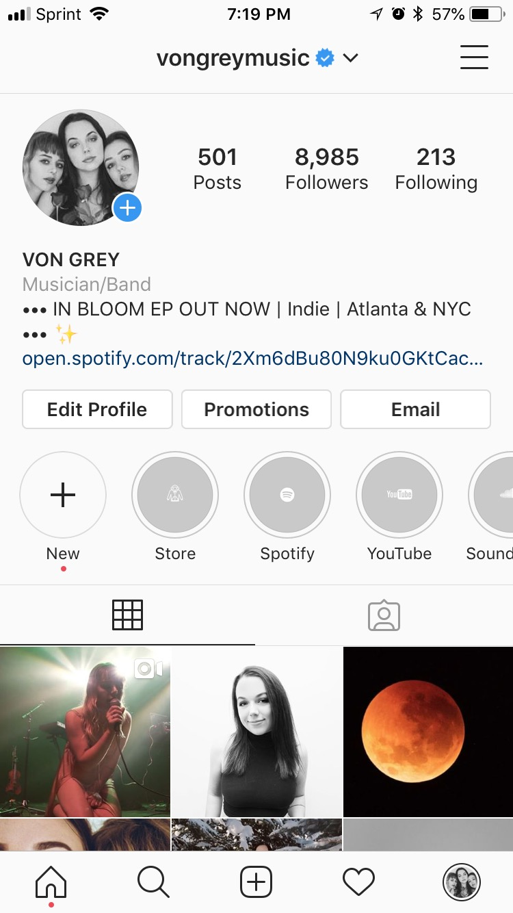

During the span of my involvement with VON GREY MUSIC, one of my key roles was to help manage the band's social media presence. In so doing, I focused on crafting branding campaigns and tailoring content to boost both following numbers and engagement. The end result was a Facebook page with over 60,000 likes, an Instagram with nearly 9,000 likes, and a twitter with nearlly 5,000 followers and highly active engagement.
Another key aspect of my work involved various graphic design projects. Below is a selection of a few different kinds of design I was tasked with.
poster designs for shows/releases/etc. CD album covers
LP album covers promotional digital graphics